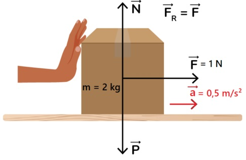
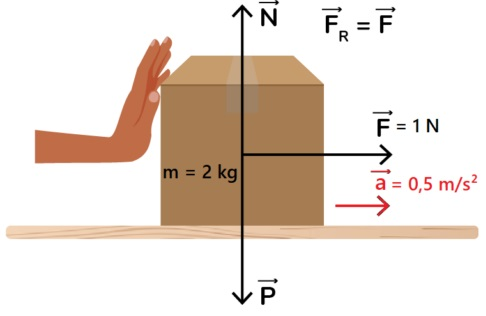

Proposito
Este site tem como objetivo simplificar o entendimento das Leis de Newton, proporcionando uma experiência interativa para estudantes e entusiastas da física. Através de explicações claras e exemplos práticos, buscamos tornar os conceitos fundamentais da dinâmica mais acessíveis.
 

A Segunda Lei de Newton, ou Princípio Fundamental da Dinâmica, estabelece que a força resultante aplicada sobre um corpo é igual ao produto de sua massa pela aceleração: F = m × a.
Onde:
F = Força resultante (N ou dinas)
m = Massa (kg ou g)
a = Aceleração (m/s² ou cm/s²)